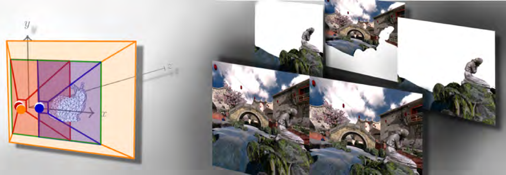

|
Laura Fink I'm a PhD Student under the supervision of Marc Stamminger at the Chair of Visual Computing of the Friedrich-Alexander-Universität Erlangen-Nürnberg, Germany in cooperation with Fraunhofer IIS. I'll finish my PhD presumably mid of 2026 and am open for job inquiries.
laura (dot) fink (at) fau (dot) de /
Scholar /
|

|
ResearchMy main research is in the fields of computer graphics, vision, and machine learning. Next to my primary PhD topic on real-time neural rendering, I'm interested in light field displays and rendering. First author papers are highlighted. |
|
|
Refinement of Monocular Depth Maps via Multi-View Differentiable Rendering
Laura Fink, Linus Franke, Bernhard Egger, Joachim Keinert, Marc Stamminger Vision, Modeling, and Visualization (VMV), Honorable Mention Award, 2025 and ICCV Workshop Wild3D, 2025 project page / paper / arxiv / video / code Dense and multi-view consistent depth maps from an monoscopically estimated initialization. |
|
|
VR-Splatting: Foveated Radiance Field Rendering via 3D Gaussian Splatting and Neural Points
Linus Franke, Laura Fink, Marc Stamminger i3D 2025 (Proceedings of the ACM on Computer Graphics and Interactive Techniques), 2025 project page / paper / code Foveated radiance field rendering with smooth Gaussian peripheral and neural point splats for crisp foveal rendering. |
|
|
TRIPS: Trilinear Point Splatting for Real-Time Radiance Field Rendering
Linus Franke, Darius Rückert, Laura Fink, Marc Stamminger Eurographics (Computer Graphics Forum), 2024 project page / paper / video / code Rendering and optimizing neural point clouds via trilinear point splatting and tiny neural networks for novel-view synthesis. |
|
|
LiveNVS: Neural View Synthesis on Live RGB-D Streams
Laura Fink, Darius Rückert, Linus Franke, Joachim Keinert, Marc Stamminger SIGGRAPH Asia, 2023 project page / paper / video / code Novel view synthesis on live RGB-D streams with feedback during capturing, robust to slam loop closures. |

|
VET: Visual Error Tomography for Point Cloud Completion and High-Quality Neural Rendering
Linus Franke, Darius Rückert, Laura Fink, Matthias Innmann, Marc Stamminger SIGGRAPH Asia, 2023 project page / paper / video / code Improving point-based novel view synthesis quality by completing point cloud with 3D error volumes from 2D error maps. |
|
|
Inovis: Instant Novel View Synthesis
Mathias Harrer* Linus Franke*, Laura Fink, Marc Stamminger, Tim Weyrich SIGGRAPH Asia, 2023 project page / paper / video / code Point-based novel view synthesis without per scene preprocessing or training using neural image based rendering. (* Joint first authors.) |

|
Efficient Rendering for Light Field Displays using Tailored Projective Mappings
Laura Fink, Svenja Strobel, Linus Franke, Marc Stamminger Proceedings of the ACM on Computer Graphics and Interactive Techniques, 2023 paper / presentation / code Rendering only relevant fragments for parallax-based light field displays through device-tailored projection matrices. |
|
UniTorch – Integrating Neural Rendering into Unity
Laura Fink, Daniel Keitel, Marc Stamminger, Joachim Keinert International Symposium on Visual Computing, 2023 paper Discussion and use-case study on the integration of neural rendering into the Unity game engine. |
|

|
Time‐Warped Foveated Rendering for Virtual Reality Headsets
Linus Franke, Laura Fink, Jana Martschinke, Kai Selgrad, Marc Stamminger Computer Graphics Forum (CGF), 2021 Presented (virtually) at Eurographics Vienna 2021 paper / presentation / supplemental material Foveated Rendering via temporal forward reprojection for fast, imperceptible VR rendering. |
|
Lumipath – Towards real-time physically-based rendering on embedded devices
Laura Fink, Sing Chun Lee, Jie Ying Wu, Xingtong Liu, Tianyu Song, Yordanka Velikova, Marc Stamminger, Nassir Navab, and Mathias Unberath MICCAI, 2019 paper / code Spherical lightfield rendering based on Fibonacci point sets for immersive AR. |
|
|  |
Hybrid Mono-Stereo Rendering in Virtual Reality
Laura Fink, Nora Hensel and Daniela Markov-Vetter, Christoph Weber and Oliver Staadt, and Marc Stamminger IEEE VR, 2019 paper Approximating far regions of stereo-image pairs by a monoscopic centered view for VR. |
|
Thanks to Jon Barron for his great template. |